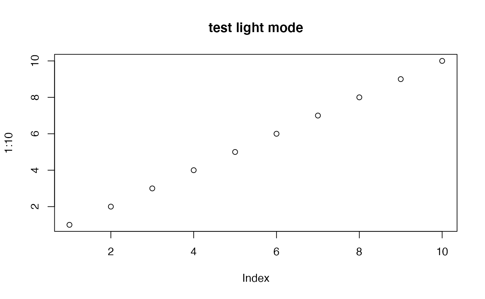

Set and Return RAVE theme
set_rave_theme(
theme,
.set_default = FALSE,
session = shiny::getDefaultReactiveDomain()
)Arguments
- theme
"light"or"dark". See details if missing- .set_default
whether to save current theme as default, default is no.
- session
shiny session
Value
theme under current context.
Details
RAVE support two themes: "light" mode and "dark" mode. In "light" mode, the web application background will be light gray and white. In "dark" mode, the application background will be gray and foreground will be white.
If theme is missing and RAVE is running as web application, then
it is set from current session, otherwise, the default theme is retrieved
from rave_options('default_theme'). If option "default_theme"
is missing, then it defaults to "light".
Examples
# Retrieve current theme
get_val(rave_options('default_theme'), default = 'light')
#> [1] "light"
# Set light mode
set_rave_theme('light')
#> [1] "light"
plot(1:10, main = 'test light mode')

# Set dark mode
set_rave_theme('dark')
#> [1] "dark"
plot(1:10, main = 'test dark mode')